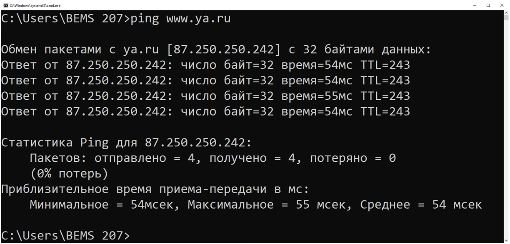
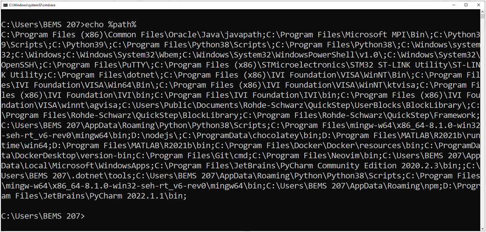
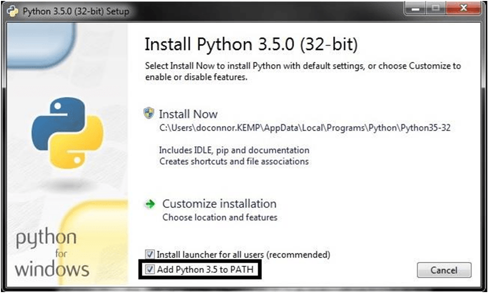

Знакомство с рабочим окружением¶
Path — пути к системному окружению. Создание виртуального окружения venv для проекта.
Знакомимся с темой рабочего окружения. Что это такое? Начнем с рабочего окружения Windows и перейдем к созданию отдельных окружений для проектов Python. Научимся переключаться между локальным и глобальным окружениями. Разберемся почему это важно, а также узнаем, как легко и просто поделиться проектом с другими разработчиками, используя виртуальное рабочее окружение, и как это помогает экономить трафик и управлять размером проекта.
После запуска операционной системы пользователю доступны различные инструменты, как системные (входящие в состав ОС), так и сторонние (установленные дополнительно). Часто в процессе работы возникает необходимость использования командной строки для вызова различных утилит, помогающих в процессе работы. Например, в случае, когда браузеру не удается открыть страницу удаленного веб-сервиса: зайти на почту или открыть новостную ленту, мы можем наблюдать следующую ошибку — «404 NotFound». Чтобы определить, на чьей стороне ошибка: вашей сети или удаленного сервера, часто используют системные утилиты, консоли для работы с сетью. Такие как PING, IPCONFIG, ARP, NETSTAT и т.д. Например, вызовем утилиту ping с параметром «www.ya.ru», чтобы проверить наличие связи с серверами. Если в окно терминала в Windows ввести команду «explorer», откроется графическое окно.

Рисунок 1 — Терминал с результатом работы команды ping.
Как это работает?
Дело в том, что операционная система (ОС) ищет введенную команду в рабочем окружении системы. В случае ОС Windows это объект PATH. В этом объекте хранятся все пути, по которым выполняется поиск исполняемых файлов.
Чтобы посмотреть содержание PATH, достаточно ввести в окно командной строки:
echo %PATH%
На рисунке 2 видно, что в окне терминала отобразилось множество путей к различным программам, не входящим в состав ОС Windows. Все они разделены символом точка с запятой «;». Одним из таких программ является интерпретатор языка программирования Python.
C:\Python39\Scripts\; C:\Python39\;
Таким образом, интерпретатор команд консоли Windows «понимает», по какому пути ему обратиться в случае ввода в окно терминала python. Во время установки Python предлагает установить галочку «AddPythontoPATH» (Рисунок 3).

Рисунок 2 — Терминал с результатом работы команды echo %PATH%

Рисунок 3 — Окно установки Python с опцией записи в системное окружение PATH
Добавить директорию в PATH¶
В Windows 10 можно добраться до настройки PATH следующим образом:
Мой компьютер → Свойства → Дополнительные параметры системы → Дополнительно → Переменные среды.
Или вызовом «Изменение переменных среды текущего пользователя» в результатах поиска.
В окошке «Переменные среды» в блоке «Переменные среды пользователя %USERNAME%» находим строку PATH, выделяем кликом, нажимаем кнопку «Изменить…» и в появившемся окошке нажимаем «Создать» для добавления еще одного элемента.
Как посмотреть содержимое переменной окружения PATH в Linux, внести в нее временные и постоянные изменения, просматривать содержимое всех переменных окружения одновременно?
Посмотреть содержание PATH
echo $PATH
/usr/local/bin:/usr/bin:/bin:/usr/local/games:/usr/games
Временно добавить директорию в PATH
Добавить /home/andrei/.local/bin в PATH
export PATH="/home/andrei/.local/bin:$PATH"
Проверка:
echo $PATH
/home/andrei/.local/bin:/usr/local/bin:/usr/bin:/bin:/usr/local/games:/usr/game
Добавить директорию в PATH через .bashrc
Чтобы добавить директорию не постоянной основе, пропишите ее в .bashrc.
Перейдите в домашнюю директорию, выполнив:
cd ~
Там, скорее всего, находится файл .bashrc. Отредактируйте его в любом текстовом редакторе:
vi .bashrc
PATH="/your_folder:${PATH}"
exportPATH
Обратите внимание, что после PATH нет пробела, как и после знака равенства.
:${PATH} означает, что вы добавляете директорию your_folder к уже существующему PATH, а не переписываете его с нуля.
Посмотреть содержимое всех переменных окружения
Чтобы изучить не только PATH, а вообще все переменные окружения, выполните:
env
LC_PAPER=en_US.UTF-8 XDG_SESSION_ID=2 LC_ADDRESS=en_US.UTF-8 HOSTNAME=localhost.localdomainLC_MONETARY=en_US.UTF-8 SELINUX_ROLE_REQUESTED= TERM=xterm-256colorSHELL=/bin/bashHISTSIZE=1000 SSH_CLIENT=192.168.56.1 41522 22 SELINUX_USE_CURRENT_RANGE= LC_NUMERIC=en_US.UTF-8 SSH_TTY=/dev/pts/1 USER=andrei LS_COLORS=rs=0:di=38;5;27:ln=38;5;51:mh=44;38;5;15:pi=40;38;5;11:so=38;5;13:do=38;5;5:bd=48;5;232;38;5;11:cd=48;5;232;38;5;3:or=48;5;232;38;5;9:mi=05;48;5;232;38;5;15:su=48;5;196;38;5;15:sg=48;5;11;38;5;16:ca=48;5;196;38;5;226:tw=48;5;10;38;5;16:ow=48;5;10;38;5;21:st=48;5;21;38;5;15:ex=38;5;34:*.tar=38;5;9:*.tgz=38;5;9:*.arc=38;5;9:*.arj=38;5;9:*.taz=38;5;9:*.lha=38;5;9:*.lz4=38;5;9:*.lzh=38;5;9:*.lzma=38;5;9:*.tlz=38;5;9:*.txz=38;5;9:*.tzo=38;5;9:*.t7z=38;5;9:*.zip=38;5;9:*.z=38;5;9:*.Z=38;5;9:*.dz=38;5;9:*.gz=38;5;9:*.lrz=38;5;9:*.lz=38;5;9:*.lzo=38;5;9:*.xz=38;5;9:*.bz2=38;5;9:*.bz=38;5;9:*.tbz=38;5;9:*.tbz2=38;5;9:*.tz=38;5;9:*.deb=38;5;9:*.rpm=38;5;9:*.jar=38;5;9:*.war=38;5;9:*.ear=38;5;9:*.sar=38;5;9:*.rar=38;5;9:*.alz=38;5;9:*.ace=38;5;9:*.zoo=38;5;9:*.cpio=38;5;9:*.7z=38;5;9:*.rz=38;5;9:*.cab=38;5;9:*.jpg=38;5;13:*.jpeg=38;5;13:*.gif=38;5;13:*.bmp=38;5;13:*.pbm=38;5;13:*.pgm=38;5;13:*.ppm=38;5;13:*.tga=38;5;13:*.xbm=38;5;13:*.xpm=38;5;13:*.tif=38;5;13:*.tiff=38;5;13:*.png=38;5;13:*.svg=38;5;13:*.svgz=38;5;13:*.mng=38;5;13:*.pcx=38;5;13:*.mov=38;5;13:*.mpg=38;5;13:*.mpeg=38;5;13:*.m2v=38;5;13:*.mkv=38;5;13:*.webm=38;5;13:*.ogm=38;5;13:*.mp4=38;5;13:*.m4v=38;5;13:*.mp4v=38;5;13:*.vob=38;5;13:*.qt=38;5;13:*.nuv=38;5;13:*.wmv=38;5;13:*.asf=38;5;13:*.rm=38;5;13:*.rmvb=38;5;13:*.flc=38;5;13:*.avi=38;5;13:*.fli=38;5;13:*.flv=38;5;13:*.gl=38;5;13:*.dl=38;5;13:*.xcf=38;5;13:*.xwd=38;5;13:*.yuv=38;5;13:*.cgm=38;5;13:*.emf=38;5;13:*.axv=38;5;13:*.anx=38;5;13:*.ogv=38;5;13:*.ogx=38;5;13:*.aac=38;5;45:*.au=38;5;45:*.flac=38;5;45:*.mid=38;5;45:*.midi=38;5;45:*.mka=38;5;45:*.mp3=38;5;45:*.mpc=38;5;45:*.ogg=38;5;45:*.ra=38;5;45:*.wav=38;5;45:*.axa=38;5;45:*.oga=38;5;45:*.spx=38;5;45:*.xspf=38;5;45: LC_TELEPHONE=en_US.UTF-8 MAIL=/var/spool/mail/andrei PATH=/usr/local/bin:/usr/bin:/usr/local/sbin:/usr/sbin:/home/andrei/.local/bin:/home/andrei/bin LC_IDENTIFICATION=en_US.UTF-8 PWD=/home/andreiLANG=en_US.UTF-8 LC_MEASUREMENT=en_US.UTF-8 SELINUX_LEVEL_REQUESTED= HISTCONTROL=ignoredupsSHLVL=1 HOME=/home/andreiLOGNAME=andrei XDG_DATA_DIRS=/home/andrei/.local/share/flatpak/exports/share:/var/lib/flatpak/exports/share:/usr/local/share:/usr/share SSH_CONNECTION=192.168.56.1 41522 192.168.56.116 22 LESSOPEN=||/usr/bin/lesspipe.sh %s XDG_RUNTIME_DIR=/run/user/1000 LC_TIME=en_US.UTF-8 LC_NAME=en_US.UTF-8 _=/usr/bin/env
Знакомство с virtualenv¶
virtualenv — это инструмент, используемый для создания изолированного рабочего пространства для приложения Python. Он дает некоторые преимущества: например, возможность локальной установки модулей, экспорта рабочей среды и выполнения программы Python внутри этого окружения. Виртуальное окружение (virtual environment) — это каталог, в который устанавливаются некоторые исполняемые файлы и скрипты. Среди файлов есть python для выполнения скриптов и pip для установки других модулей в окружении. По сути, виртуальное окружение имитирует полную системную установку Python и всех необходимых модулей, не вмешиваясь в работу системы, на которой будет запускаться приложение.
В 2017 году был опубликован Pipenv, который управляет всеми вышеперечисленными инструментами: виртуальными окружениями интерпретаторов Python, зависимостями пакетов, их активацией и блокировкой версий в Pipfile.
Установка
Python 3.3+ поставляется с модулем venv.
Для более старых версий Python можно использовать сторонний инструмент virtualenv.
Пакеты
Установите один из следующих пакетов:
Python 3.3+: python
Python 3: python-virtualenv
Для Pipenv:
Python 3: python-pipenv
Все три инструмента похожи.
Создание
Используйте venv или virtualenv для создания виртуального окружения в каталоге вашего проекта. Не забудьте исключить каталог venv из вашей системы контроля версий, для его восстановления достаточно копии pip freeze.
Он входит в состав python (3.3+):
$ python -m venv env name
Доступен в пакете python-virtualenv.
$ virtualenvenvname
Активация
Для активации виртуального окружения используйте один из имеющихся скриптов для вашей командной оболочки. Пример для bash:
$ source env_name/bin/activate
(envname) $
Теперь команды python и pip будут запускаться и управлять пакетами только внутри виртуального окружения, не затрагивая систему.
Для выхода из виртуального окружения выполните функцию, которую создал скрипт активации: (envname) $ deactivate.
Версии Python
По умолчанию виртуальные окружения создаются с использованием стандартного системного Python. Файл bin/python — это просто символическая ссылка на системный python:
$ ls -l envname/bin/python
lrwxrwxrwx 1 foo foo 15 янв 29 18:48 envname/bin/python -> /usr/bin/python
Если вы хотите использовать другую версию Python внутри виртуального окружения, можно использовать опцию -p/--python у virtualenv:
$ virtualenv -p 3.8 envname
$ ls -l envname/bin/python
lrwxrwxrwx 1 foo foo 18 янв 29 18:48 envname/bin/python -> /usr/bin/python3.8
Также можно использовать pypy3:
$ virtualenv -p pypy3 env name
Использование
Все команды можно выполнять в папке проекта, и pipenv распознает текущую ситуацию, найдет виртуальное окружение в текущем каталоге и будет использовать его. В этом разделе будут показаны установка, настройка, а также проведен полный обзор всех возможностей использования утилит venv и virtualenv для Python. Но начнем мы с рассмотрения общих вопросов.
В процессе разработки приложений на языке программирования Python может возникнуть ряд проблем, которые связаны с применением различных версий библиотек. Например, для работы двух различных приложений может потребоваться одна и та же библиотека, но разных версий. Или же нужно обеспечить корректную работу приложения вне зависимости от обновления версии библиотеки, которую оно использует.
Чтобы решать подобные проблемы, разработчики придумали интересный способ: запускать каждое приложение со своим набором версий библиотек в изолированных средах. Таким образом, виртуальная среда (virtual environment) в языке Python позволяет управлять проектами изолированно друг от друга, то есть:
у каждого проекта могут быть свои зависимости;
зависимости одного проекта не влияют на зависимости другого проекта.
Создавать виртуальное окружение в Python можно при помощи различных утилит. Поговорим про venv и virtualenv.
Важно: перед началом работы у вас должен быть установлен Python 3 и pip. Если вы используете Windows, все следующие команды, кроме тех, где будет альтернативный вариант, выполняются таким же образом, но необходимо заменять pip3 на pip, а python3 на Python.
Работа с venv
Чтобы создать виртуальную среду, мы используем модуль venv. Это удобный инструмент для управления зависимостями и изоляции проектов, который выстроен в Python, начиная с версии Python 3.3+. Поэтому модуль venv нельзя использовать для изоляции программ Python 2.x.
Создание проекта
Приступим к созданию проекта. Первым делом следует создать папку проекта и перейти в нее, в Linux это можно сделать при помощи следующих команд:
$ mkdir my_python_project
cd my_python_project
Замените my_python_project на желаемое название проекта.
Создание виртуальной среды¶
Теперь создадим в этой папке виртуальную среду:
$python3 -m venv env
Замените project_name_myproject на желаемое название виртуальной среды. Если у вас возникает следующая ошибка:
The virtual environment was not created successfully because ensurepip is not
available. On Debian/Ubuntu systems, you need to install the python3-venv
package using the following command.
Это говорит, что в вашей системе отсутствует пакет python3-venv, и вам следует его установить. Команда представлена ниже:
apt-get install python3-venv
You may need to use sudo with that command. After installing the python3-venv
package, recreate your virtual environment.
Failing command: ['/home/osboxes/my_python_project/project_name_myproject/bin/python3', '-Im', 'ensurepip', '--upgrade'
Вам необходимо установить venv. Например, в Ubuntu для этого требуется выполнить следующую команду:
$ sudo apt-get install python3-venv-y
После повторите команду создания виртуальной среды Python, показанную в начале этого раздела.
Активация виртуальной среды
Осталось активировать виртуальную среду при помощи команды:
$ sourceproject_name_myproject/bin/activate
Замените project_name_myproject на название виртуальной среды, созданной на прошлом шаге. Если вы используете Windows, и у вас правильно установлен Python и pip, то вы можете активировать виртуальную среду следующей командой:
$ project_name_myproject/Scripts/activate
Замените project_name_myproject на название виртуальной среды, созданной на прошлом шаге.
Проверка установленных пакетов Теперь проверим установленные пакеты pip внутри виртуальной среды:
$ pip3list
Вывод должен быть примерно такой:
Package Version
------------- -------
pip 20.3.4
pkg-resources 0.0.0
setuptools 44.1.1
Как мы видим, внутри виртуальной среды у нас нет никаких сторонних установленных библиотек c pip. Можно установить какой-либо пакет, например, модуль requests:
$ pip3 install requests
Теперь снова проверим список установленных пакетов pip внутри виртуальной среды:
$ pip list
В выводе должен появиться наш только что установленный пакет:
Package Version
------------- ---------
certifi 2021.5.30
chardet 4.0.0
idna 2.10
pip 20.3.4
pkg-resources 0.0.0
requests 2.25.1
setuptools 44.1.1
urllib3 1.26.5
Выход из виртуальной среды
Для выхода из виртуальной среды необходимо выполнить команду:
deactivate.
Если после выхода снова проверить список установленных пакетов, то мы получим совсем другой вывод:
Package Version
---------------------- -------------
apturl 0.5.2
bcrypt 3.1.7
blinker 1.4
Brlapi 0.8.2
certifi 2020.6.20
chardet 4.0.0
chrome-gnome-shell 0.0.0
click 7.1.2
colorama 0.4.4
command-not-found 0.3
cryptography 3.3.2
Перенос установленных пакетов¶
Для переноса установленных пакетов в другую среду на Linux можно использовать простую команду:
$ python3-m pip freeze > requirements.txt
Она создаст файл requirements.txt, в котором будет находиться список всех установленных пакетов. Импорт пакетов в другую среду. Теперь можно перейти в другую виртуальную среду и импортировать пакеты следующей командой:
$ pip3install-r requirements.txt
Работа с virtualenv
Утилита virtualenv — это наиболее популярный инструмент, который используется для создания изолированных сред в Python. Он создает папку, содержащую все необходимые исполняемые файлы для использования пакетов, которые потребуются проекту Python. В отличие от модуля venv, эту утилиту можно использовать как в Python 3, так и в версии 2.7.
Установка virtualenv и создание виртуальной среды¶
Чтобы установить утилиту virtualenv, используйте pip:
$ pip install virtualenv
Создание виртуальной среды virtualenv происходит так¶
$ cd project_folder
$ virtualenv myproject
virtualenv myproject создаст папку в текущей директории. В ней будут находиться исполняемые файлы Python и копия библиотеки pip, которую можно использовать для установки других пакетов. Имя виртуальной среды (в данном случае myproject) может быть любым. Если имя отсутствует, файлы будут помещены в текущий каталог. Таким образом, создается копия Python в любом каталоге, в котором вы запускали команду, помещая ее в папку с именем myproject. Вы также можете использовать интерпретатор Python по выбору. Пример использования Python 2.7:
$ virtualenv-p /usr/bin/python2.7 myproject
Для версии Python 3.7:
$ virtualenv-p /usr/bin/python3.7 myproject
Проверить версию Python и pip можно с помощью следующих команд:
$ python--version
$ pip--version
Для выхода из виртуальной среды необходимо выполнить команду:
$ deactivate
Копирование виртуальной среды¶
Чтобы копировать виртуальные среды, введите:
$ cpvirtualenv new-project new-project-copy
Copying new-project as new-project-copy...
$ workon
new-project
new-project-copy
Удаление виртуальной среды¶
Удалять виртуальные среды можно при помощи команды:
$ rmvirtualenvnew-project-copy
Важно — не забудьте перед удалением выйти из виртуальной среды при помощи команды:
$ deactivate
$ rmvirtualenv new-project-copy
Removing new-project-copy...
$ workon
new-project
Справочный материал¶
Синтаксис
Интерфейс использования:
pip <command> [options]
install |
Установка пакетов |
|---|---|
download |
Скачивание пакетов. |
uninstall |
Удаление пакетов. |
freeze |
Вывод установленных пакетов в формате файла зависимостей. |
list |
Вывод списка установленных пакетов. |
show |
Вывод информации об установленных пакетах. |
check |
Проверка совместимости установленных пакетов с их зависимостями. |
config |
Управление локальной и глобальной конфигурацией. |
search |
Поиск пакетов в PyPI. |
wheel |
Сборка wheel из зависимостей. |
hash |
Вычисление хешей из hashes of package archives. |
completion |
Вспомогательная команда для автодополнения командной строки. |
debug |
Вывод информации применимой для отладки. |
help |
Вывод справки по командам. |
Общие опции: |
Описание |
|---|---|
-h, –help |
Вывод справки. |
–isolated |
Запуск pip в изолированном режиме, с игнорированием переменных окружения и пользовательской конфигурации. |
-v, –verbose |
Расширенный вывод. Опция аддитивная и может использоваться до 3 раз. |
-V, –version |
Вывод версии. |
-q, –quiet |
Сокращенный вывод. Опция аддитивная и может использоваться до 3 раз (соответствует уровням логирования WARNING, ERROR и CRITICAL). |
–log |
Путь инкрементального вывода логов. |
–proxy |
Настройки прокси в форме [user:passwd@]proxy.server:port. |
–retries |
Максимальное количество попыток, которое должно предпринять каждое соединение (по умолчанию 5 раз). |
–timeout |
Установить время ожидания сокета (по умолчанию 15 секунд). |
–exists-action |
Действие по умолчанию, когда путь уже существует: (s)witch, (i)gnore, (w)ipe, (b)ackup, (a)bort. |
–trusted-host |
Пометить хост как доверенный, в случае если HTTPS хоста инвалидный. |
–cert |
Путь к альтернативному комплекту CA. |
–client-cert |
Путь к сертификату клиента SSL, отдельный файл, содержащий закрытый ключ и сертификат в формате PEM. |
–cache-dir |
Настройка директории кэширования данных. |
–no-cache-dir |
Отключение кеша. |
–disable-pip-version-check |
Отключение периодической проверки PyPI на доступность новой версии pip. |
–no-color |
Подавление цветного вывода. |
Ссылки на дополнительные ресурсы:
https://docs.python.org/3/library/venv.html
https://www.codecamp.ru/blog/python-virtual-environments/